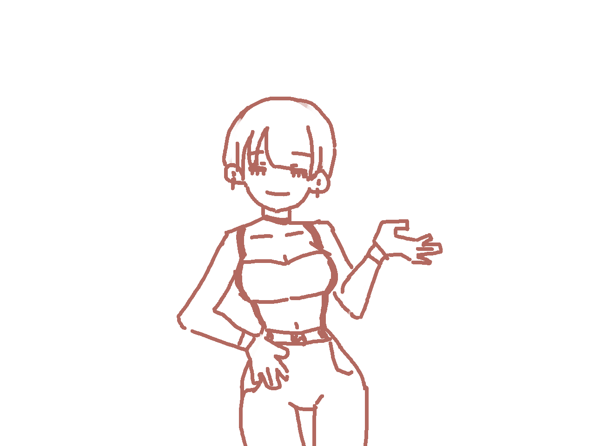
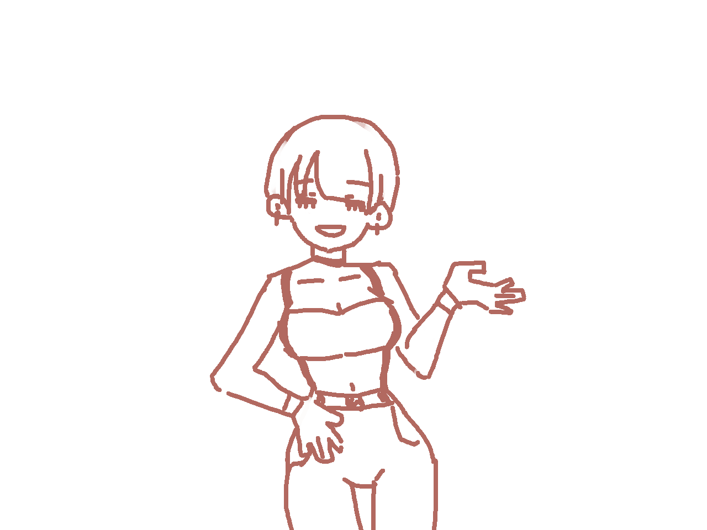

CAM #cam translate + scale
CRT #fx 扫描线 / 栅格 / 暗角 / 滚动 / 闪烁
BG 走廊.png 2848x1400 cover
CHARA 口林00 / 口林01.png 1280x960 rgba（透明）
UI #dg Zpix 像素字体
示例演示 · 文字 AVG 舞台
点击 / 空格：继续 A：自动 D：调试
▼
调试面板
D 开关
镜头缩放
1.00
镜头横移
0
立绘横移
0
立绘大小
1.00
闭口
开口
镜像
呼吸
淡出
淡入
CRT 开/关
拆开
重播
确认
【已强制切出 · 进度已保存】
下一次进入时，将从「核对」环节继续。
继续（回到核对）
↩ 返回主页面